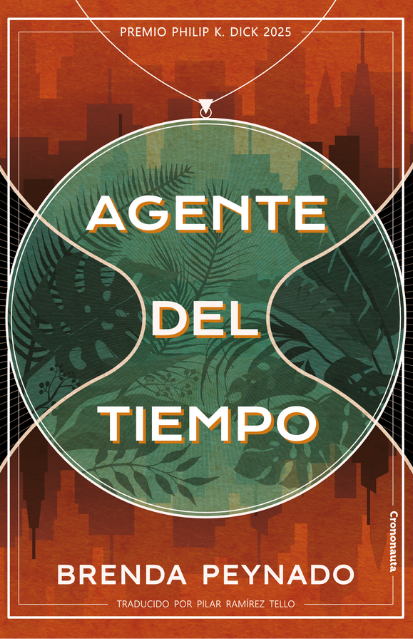

Esta novela. Premio Philip K. Dick 2025. Mundos de bolsillo, duelo y República Dominicana.
shop.crononauta.es · Agente del tiempoSu colección de cuentos en inglés (Penguin). No hemos verificado una edición en castellano.
brendapeynado.com · Booksel tiempo es un sabueso que te da caza. El tiempo, mi enemigo. El tiempo, el ladrón.
1el tiempo es un sabueso que te da caza. El tiempo, mi enemigo. El tiempo, el ladrón.
3el ladrón del tiempo intenta arrebatártelo todo a manos llenas.
2deseando encontrar algo nuevo que te saque de tu tedio.
4Es que no sabes lo peligroso que es tener algo de valor? —quería decirle—. ¿Algo que merece la pena robar, descubrir o visitar?». La idea me sorprendió; no estaba acostumbrada a pensar así desde que me uní al instituto. Me recordó a cuando Marlena y yo nos besamos por primera vez y lo mantuvimos en secreto, a lo aterradas que estábamos, a nuestro amor a puerta cerrada.
5tiempo era un producto, tan fácil de fabricar como de tirar a la basura.
7Había muchas formas de cobrar por tu desesperación.
6mientras cartografiaba con mi tristeza aquella ciudad transformada.
11. Vuelvo a ser egoísta. Me siento sola. Soy un globo inflado con los fantasmas de todo lo que era mío hace tan solo un año, llena y hueca a la vez, a punto de estallar.
8Con tan solo parpadear, puedes dejar de ver cualquier cosa. Un parpadeo, y la entropía del tiempo ha consumido cualquier orden que comprendieras en el mundo.
10nada podía ser permanente, que a todos nos llevaban las horas y nos perdíamos en los cambios.
14Pienso en que, en algunas escalas de tiempo, parezco una estatua que se mueve a una velocidad tan escasa que resulta imperceptible. En que, sin el tiempo, todo es bello, cada aliento ahogado queda desconectado de su consecuencia.
9Tendría que conocer el hardware, cómo maneja la pila el lenguaje de programación y un montón de parámetros más. Y también dependería de la psique. Todo ser, sea máquina o humano, tiene un imperativo. De lo contrario, no habría una acción mejor que otra; la consciencia no podría actuar. Así que tendría que conocer la heurística de la psique. Su hambre, por así decirlo. En algunos casos, les permitiría no ver algo. En otros, el descubrimiento siempre merecerá la pena.
12El zemí de Maquetaurie Guayaba que monta guardia ensancha su sonrisa.
13Para personas como Delatonio, nunca hay suficiente para llenar el vacío que les han abierto a bocados. Creen que, para compensárselo, se lo merecen todo. Y para las personas como Divya, todos los universos eran ya suyos de por sí.
El tiempo es a la vez mercancía y ladrón. Empiezas por la caza: «un sabueso que te da caza. El tiempo, mi enemigo. El tiempo, el ladrón» (nº 1), que «intenta arrebatártelo todo a manos llenas» (nº 3). Poco después el mismo tiempo «era un producto, tan fácil de fabricar como de tirar a la basura» (nº 5). En la novela —mundos de bolsillo colonizados por corporaciones— esas dos caras no se contradicen: se fabrica tiempo para venderlo, y al venderlo se lo roba a quien ama. «Había muchas formas de cobrar por tu desesperación» (nº 7) cierra el trato.
Lo que merece ser robado. El tedio busca «algo nuevo» (nº 2), pero el valor asusta: «¿no sabes lo peligroso que es tener algo de valor?» (nº 4). Esa frase no queda en abstracto: Raquel la asocia al primer beso con Marlena, «nuestro amor a puerta cerrada». El secreto queer no es un adorno; es el prototipo de todo lo que el tiempo (y el instituto, y las empresas) pueden arrebatar. El duelo lo confirma: cartografía «con mi tristeza aquella ciudad transformada» (nº 6) y se describe como «un globo inflado con los fantasmas de todo lo que era mío… llena y hueca a la vez» (nº 11; el punto inicial es tu copia literal).
Entropía, psique y mito. Un parpadeo basta para que «la entropía del tiempo ha consumido cualquier orden» (nº 8); «nada podía ser permanente» (nº 10). En medio, el subrayado más técnico (nº 9): para prever lo que alguien verá o no verá hay que conocer el hardware, la pila del lenguaje y, sobre todo, «la heurística de la psique. Su hambre». Todo ser, «sea máquina o humano, tiene un imperativo». Es tu metáfora de la IA escrita en la novela: sin objetivo no hay acción mejor que otra; el hambre decide qué se oculta y qué «siempre merecerá la pena» descubrir. El zemí de Maquetaurie Guayaba —señor taíno de los muertos y de la tierra de los ausentes— «ensancha su sonrisa» (nº 12) como guardia de ese umbral. Y el contraste Delatonio/Divya (nº 13) parte el deseo en dos: quien nunca llena el vacío que le abrieron «a bocados» y quien ya poseía «todos los universos». El cierre (nº 14) invierte la tesis: en una escala en la que pareces una estatua, «sin el tiempo, todo es bello», porque el aliento ahogado se desconecta de su consecuencia.
Cómo conecta con tus intereses.
Preguntas para seguir leyendo
Esta novela. Premio Philip K. Dick 2025. Mundos de bolsillo, duelo y República Dominicana.
shop.crononauta.es · Agente del tiempoSu colección de cuentos en inglés (Penguin). No hemos verificado una edición en castellano.
brendapeynado.com · BooksEn esta consulta (10 nov 2026) la única edición en castellano que hemos podido verificar es Agente del tiempo (Crononauta). No localizamos una edición española de The Rock Eaters ni de un título titulado «La lotería de los cielos».